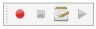
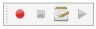
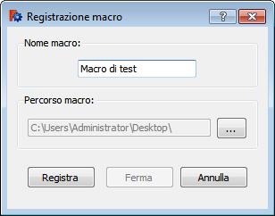

|
| Menüeintrag |
|---|
| Makro → Makro aufzeichnen... |
| Arbeitsbereich |
| All |
| Standardtastenkürzel |
| None |
| Siehe auch |
| None |
Beschreibung
Diese Funktion zeichnet ein Makro von allen Operationen auf, die im 3D-Raum ausgeführt werden.
Sie kann mittels Makro → Makro aufzeichnen..., oder mit der  Macro recording Schaltfläche  in der Makro Werkzeugleiste aufgerufen werden.
Macro recording Schaltfläche  in der Makro Werkzeugleiste aufgerufen werden.
{kind=link}
Anwendung
Starte die Funktion mit einer der oben aufgeführten Methoden. Die folgende Meldung erscheint:
|  |
|
{kind=link}
Nach dem alle Aktionen aufgezeichnet sind, klicke  Makroaufzeichnung beenden um die Aufzeichnung des Makros zu beenden.
Makroaufzeichnung beenden um die Aufzeichnung des Makros zu beenden.
Das Makro kann durch Auswählen des Menüpunktes Makro → Makros..., oder durch Klicken auf die Schaltfläche  Ausführen in der Makro-Werkzeugleiste ausgeführt oder modifiziert werden.
Ausführen in der Makro-Werkzeugleiste ausgeführt oder modifiziert werden.
Beispiel
Klicke auf die Schaltfläche  und gebe einen Namen für das Makro ein, und starte die Aufzeichnung. Erzeuge ein neues Dokument, füge einen Würfel aus dem Part-Arbeitsbereich hinzu und ändere die Farbe des Würfels. Die Aufzeichnung wird jetzt mit einem Klick auf die Schaltfläche
und gebe einen Namen für das Makro ein, und starte die Aufzeichnung. Erzeuge ein neues Dokument, füge einen Würfel aus dem Part-Arbeitsbereich hinzu und ändere die Farbe des Würfels. Die Aufzeichnung wird jetzt mit einem Klick auf die Schaltfläche  gestoppt.
gestoppt.
Das Makro zur Erzeugung eines Dokuments mit einem farbigen Würfel ist jetzt in deinem Makroverzeichnis verfügbar.